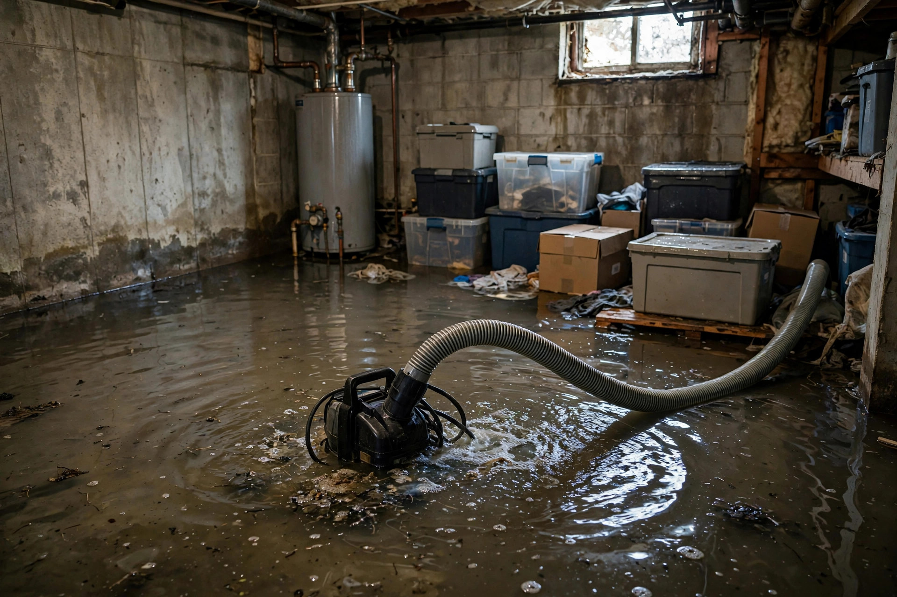

Home / Water Damage / Flooded Basement
Boise, Idaho · Pump-out to dry-outFlooded basement? We handle the whole mess.
From the first pump to the last moisture reading — water removal, wet material tear-out, drying, and mold prevention in one coordinated job.

Why Boise basements flood
Canal seepage and high water tables are the local pattern — not just storms.
| Source | What it looks like |
|---|---|
| Canal and irrigation seepage | Water at the wall-floor joint, late spring through summer |
| Snowmelt overwhelm | Window wells and stairwells filling in March–April |
| Sump failure | Rising water with a silent pump — usually a dead float switch |
| Plumbing break | Sudden, large volume — water heater, washer, or supply line |
The cleanup sequence
Flooded basements follow a strict order. Here's ours:
Pump and extract
Submersible pumps take the deep water; extractors get the rest. We don't stop until the floor is clear.
Remove what's ruined
Wet carpet pad, soaked drywall, swollen baseboards — out. Clean water and fast response save more; we never tear out what can be dried.
Dry the structure
Air movers and dehumidifiers run 2–4 days. Daily moisture readings track framing, subfloor, and remaining drywall to dry standard.
Prevent the mold
Antimicrobial treatment on framing, then verification. Drying within the first 48 hours is what stops mold before it starts — per EPA guidance.
Snowmelt through a window well
Picture a warm March weekend after a heavy snow winter. The south-facing snowpack melts fast, the window well drain can't keep up, and water pours through the basement window — two inches across the finished basement by evening. Cleanup means pumping, pulling the carpet and pad, cutting drywall two feet up, and running drying equipment for four days. The window well gets a new drain and cover so it doesn't repeat next spring. Total time on site: one long day for pump-out and tear-out, then four days of drying with daily checks.
Flooded basement questions
My basement has two inches of water. Where do I start?
Safety first: don't walk into water that may have reached outlets — kill the power to the basement at the breaker if you can do it dry. Then call. We'll pump it out, extract every last bit, and start the drying equipment all in the same visit.
Will my finished basement be ruined?
It depends on the water type and how long it sat. Clean water caught fast often saves framing and sometimes drywall above the waterline. Anything soaked by contaminated water, or wet longer than 48 hours, usually has to go.
How do you get the water out of a basement?
Submersible pumps for deep standing water, then truck-mounted extractors for the rest, then air movers and dehumidifiers for the structure. Stairs and tight access are normal for us — we bring the right hose lengths.
What about the smell afterward?
The musty smell is bacteria and early mold on wet materials. Removing the wet pad, carpet, and affected drywall plus thorough drying eliminates it. If the smell persists after drying, something is still wet — we find it.
Can you prevent this from happening again?
We can tell you why it happened — grading, gutter, sump, or groundwater — and what would stop it. The cleanup fixes this flood; the recommendations prevent the next one.
What floods Boise basements specifically
Irrigation-season seepage
From April through October, canal water raises the local water table. Basements with hairline foundation cracks weep water at the wall-floor joint for months. It rarely looks dramatic — just a damp line — but it keeps the basement humid enough for mold all summer.
Sump pumps that quit quietly
Most sump failures aren't dramatic — the float switch sticks or the discharge freezes in winter. The homeowner finds out when the water is already on the floor. A $15 water alarm in the pit is the cheapest insurance there is.
Basement underwater right now?
Call before you start hauling. We'll talk you through the safety steps and get a crew rolling out fast — the first hour matters most.